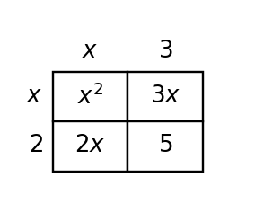

- Students think and write a first attempt independently.
- Partners trade boards or papers and read each other’s reasoning.
- Partners ask one clarifying question before revising.
- Partners agree on a final response and prepare to justify it.
- Teacher displays the solution page for comparison.
- Both partners have an independent first attempt.
- Students ask a clarifying question before revising.
- The final answer reflects agreement and explanation.
- One partner starts by copying the other.
- Partners trade only final answers, not reasoning.
- Disagreement is ignored instead of resolved.
For $g(x)=x^2-1$, find $g(-2)$.
For $g(x)=x^2-1$, find $g(-2)$.
A rule is described as "triple the input, then subtract $8$." Generate four ordered pairs using inputs $0,1,2,3$.
A rule is described as "triple the input, then subtract $8$." Generate four ordered pairs using inputs $0,1,2,3$.
Analyze the structure of these two rules: $f(x)=2(x+3)$ and $g(x)=2x+6$. Do they always give the same output for the same input, or only sometimes? Justify with structure and one substitution check.
Analyze the structure of these two rules: $f(x)=2(x+3)$ and $g(x)=2x+6$. Do they always give the same output for the same input, or only sometimes? Justify with structure and one substitution check.
A table for an input-output rule is flawed: $(0,3),(1,6),(2,9),(2,12),(3,12)$. Revise the relation in two different ways: one revision that makes it a function with a constant increase, and one revision that makes it a function but not a constant-increase rule. Explain both choices.
A table for an input-output rule is flawed: $(0,3),(1,6),(2,9),(2,12),(3,12)$. Revise the relation in two different ways: one revision that makes it a function with a constant increase, and one revision that makes it a function but not a constant-increase rule. Explain both choices.
Use order of operations to simplify.
- $5-2\cdot3^2$
- $(-2)^2$
- $18\div3+4(2)$
- $7+|-9+4|$
Use order of operations to simplify.
- $5-2\cdot3^2$
- $(-2)^2$
- $18\div3+4(2)$
- $7+|-9+4|$
- $5-2\cdot3^2=5-18=-13$.
- $(-2)^2=4$.
- $18\div3+4(2)=6+8=14$.
- $7+|-9+4|=7+5=12$.
Evaluate each root expression.
- $\sqrt[3]{27}$
- $\sqrt{144}$
- $\sqrt{3^2}$
- $\sqrt[4]{2^4}$
Evaluate each root expression.
- $\sqrt[3]{27}$
- $\sqrt{144}$
- $\sqrt{3^2}$
- $\sqrt[4]{2^4}$
- $\sqrt[3]{27}=3$.
- $\sqrt{144}=12$.
- $\sqrt{3^2}=\sqrt9=3$.
- $\sqrt[4]{2^4}=2$.
Substitute $x=-2$ and $y=-5$ into each expression.
- $1-2x+3y$
- $x^2-y$
- $\frac{y-x}{3}$
Substitute $x=-2$ and $y=-5$ into each expression.
- $1-2x+3y$
- $x^2-y$
- $\frac{y-x}{3}$
- $1-2(-2)+3(-5)=1+4-15=-10$.
- $(-2)^2-(-5)=4+5=9$.
- $\frac{-5-(-2)}{3}=\frac{-3}{3}=-1$.
Evaluate $|2x-7|+x^2$ for $x=-3$ and for $x=4$. Which input gives the larger output, and by how much?
Evaluate $|2x-7|+x^2$ for $x=-3$ and for $x=4$. Which input gives the larger output, and by how much?
A rectangular pattern has expression $2(l+w)$ for its border length. Evaluate the expression for $l=7.5$ and $w=3.25$, then state what the value represents.
A rectangular pattern has expression $2(l+w)$ for its border length. Evaluate the expression for $l=7.5$ and $w=3.25$, then state what the value represents.
Rewrite $5(2x-3)+4x$ as a simplified expression. Show both the distribution step and the combining-like-terms step.
Rewrite $5(2x-3)+4x$ as a simplified expression. Show both the distribution step and the combining-like-terms step.
The area model is intended to represent $(x+2)(x+3)$, but one cell is incorrect. Identify the mismatch, revise the model, and explain how the product should expand.

The area model is intended to represent $(x+2)(x+3)$, but one cell is incorrect. Identify the mismatch, revise the model, and explain how the product should expand.
Write a context where $4(a+3)$ and $4a+3$ would mean different things. Evaluate both for the same value of $a$ and explain the difference in meaning.
Write a context where $4(a+3)$ and $4a+3$ would mean different things. Evaluate both for the same value of $a$ and explain the difference in meaning.
A graph crosses the vertical axis at $({0},{12})$. In a situation about a water tank, what could ${12}$ represent?
A graph crosses the vertical axis at $({0},{12})$. In a situation about a water tank, what could ${12}$ represent?
The scatter plot shows practice days and score gain. Describe the overall association and identify one point that supports your description.

The scatter plot shows practice days and score gain. Describe the overall association and identify one point that supports your description.
A rule has the same output for every input. Construct an example table and symbolic rule, then explain why the output is constant even as the input changes.
A rule has the same output for every input. Construct an example table and symbolic rule, then explain why the output is constant even as the input changes.
A school club’s table shows inputs ${0}$, ${1}$, ${2}$, ${3}$ with outputs ${10}$, ${14}$, ${17}$, ${22}$. Revise the flawed model by deciding whether one output is likely an error, replacing it, and writing a rule that fits the corrected table.
A school club’s table shows inputs ${0}$, ${1}$, ${2}$, ${3}$ with outputs ${10}$, ${14}$, ${17}$, ${22}$. Revise the flawed model by deciding whether one output is likely an error, replacing it, and writing a rule that fits the corrected table.
Decide whether each input has exactly one output: $(2,1),(3,1),(4,7)$.
For $g(x)=10-x$, find the input that gives output $6$.
A graph point is $(0,9)$. What output goes with input $0$?
Combine like terms: $5x-2x+7$.
Decide whether each input has exactly one output: $(2,1),(3,1),(4,7)$.
For $g(x)=10-x$, find the input that gives output $6$.
A graph point is $(0,9)$. What output goes with input $0$?
Combine like terms: $5x-2x+7$.
- Yes. Inputs $2,3,4$ are each used once, so each has exactly one output.
- $10-x=6$, so $x=4$.
- The output is $9$.
- $5x-2x+7=3x+7$.